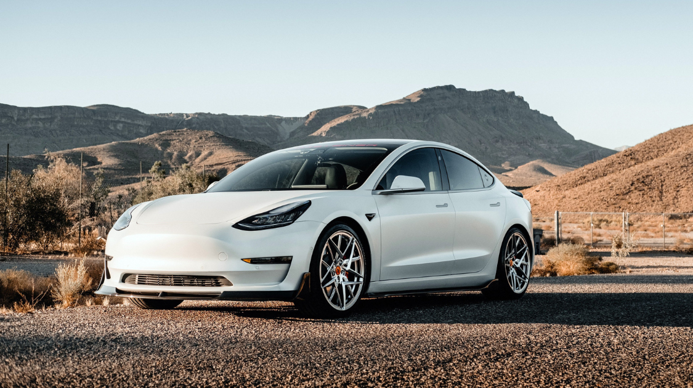

Business & Technology
Is Tesla the Vehicle of the Future?
By Holly Li | Published Jun 19, 2021 12:52 p.m. PST

History of Tesla
Tesla is known for its production of driverless and electrical automobiles. Established in 2003, Tesla released its first electric powered car in 2008. Different from traditional cars, Tesla did not use an internal–combustion engine; instead, it used lithium–ion cells. Nevertheless, the performance of this car is comparable to traditional vehicles.
Soon, demand for Tesla cars skyrocketed. However, the company did not have sufficient funds to produce and meet the demand. Fortunately, Tesla secured a massive $465 million loan from the U.S. Department of Energy. This gave the company the much-needed capital they needed for long-term survival.
In 2012, the Model S went into full production. The Tesla Model S was a stunning success. Moreover, Tesla developed the Powerwall, Powerpack, and Solar Roof for customers to store and generate electricity.
Due to the growing demand, Tesla built more supply chains rapidly. Therefore, problems regarding quality control arose. In 2020, Tesla recalled almost 10,000 vehicles for quality control issues. The insecurity of seatbelts, misplacement of glass roofs, and water leaks worried consumers. The problems continued into 2021, leading to more safety and quality concerns.
Why are electrical vehicles more environmentally friendly than traditional cars?
Some people argue that traditional vehicles damage the environment when petroleum is burned to generate electricity in a car. When petroleum is burned, CO2 can be emitted at places people do not see. In fact, electricity can be produced more efficiently in factories than burning gasoline in individual cars. Due to the traffic jams, brake time, and reaction time, most of the gasoline is wasted and some gasoline is simply given off as heat. Therefore, less than 20% of energy is effectively utilized.
In contrast, 80% of petroleum can be transferred into electricity in factories. Overall, almost 50% of energy can be put into actual use in electrical vehicles. In addition, renewable sources such as wind energy and nuclear energy can further decrease the carbon emission.
However, it is also argued that electric cars are not the perfect solution to improving the environment. Electric cars often store energy in large batteries, which can generate more carbon emissions than the average gas–powered cars. Furthermore, the dependence on raw materials, such as cobalt and lithium, which have to be mined, when using lithium–ion cells have caused environmental concerns.
The vision of vehicles in the future
Featured by a driverless system and reduced carbon emission, Tesla is constructing an appealing image of future vehicles. All Tesla's autonomous driving systems can be updated through system maintenance. All cars can be controlled by an internet that detects the traffic lights and the position of all other cars, whereby all cars can move at the same time when the traffic light switches. There will be no need to stop while driving. In this case, the cars will become mobile terminals like the cell phones.